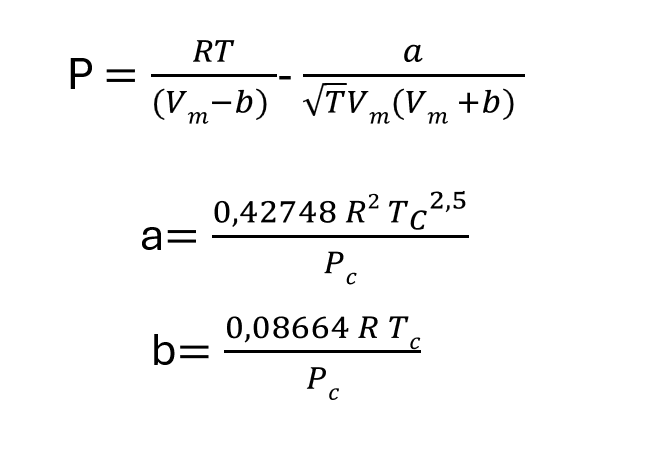
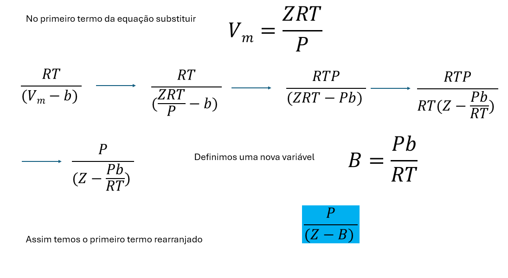
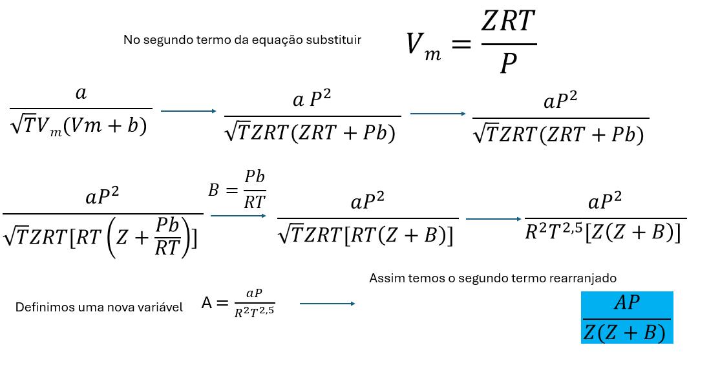
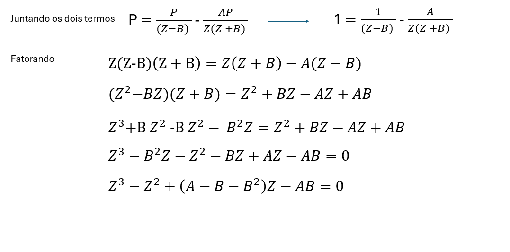
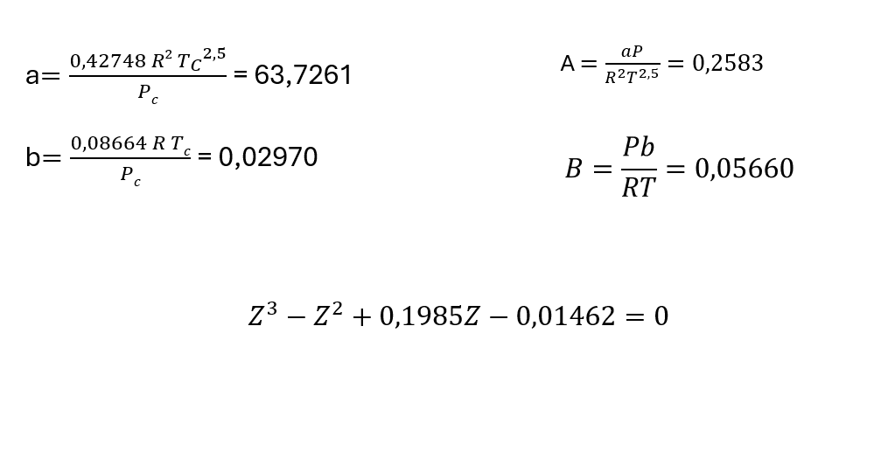
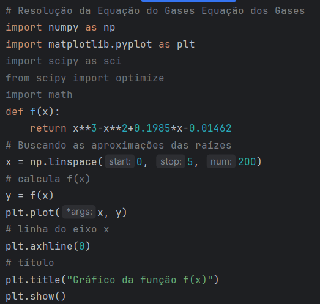
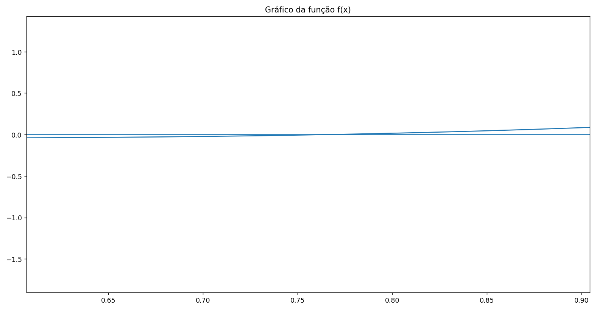
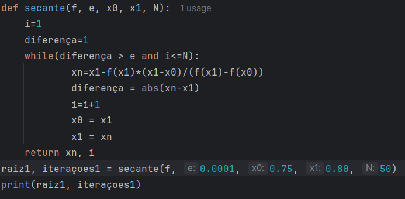

Essa postagem do Química Programada vai tratar da resolução numérica de equações de estado de gases reais para obtenção do volume molar. O gás escolhido é o gás carbônico, nas condições de temperatura e pressão indicadas a abaixo
A Equação de Estado usada para modelagem do comportamento real do gás será a Equação de Redlich-Kwong. Para tanto, é necessário uso das constantes críticas do gás que são:
Na Figura 1, apresentamos a Equação de Estado de Redlich-Kwong. Ela foi formulada por Otto Redlich e Joseph Neng Shun Kwong em 1949. Ela é mais precisa que a equação de van der Waals e apresenta duas constantes que dependem das propriedades críticas do gás. A constante a corrige o potencial de atração das moléculas e a constante b corrige o volume.

Para obtenção do volume molar do CO2 nas condições de interesse (50 atm e 320 K), é necessária a resolução da equação cúbica de estado em termos do fator de compressibilidade. Obtendo a solução em termos do fator de compresibilidade, é possível estimar o volume molar. Para transformação da equação apresentada na Figura 1 na equação cúbica em termos do fator de compressibilidade, é necessário executar a sequência de manipulações algébricas apresentadas nas figuras de Figura 2 a Figura 4.



Agora, de posse dos dados de pressão e temperatura críticas do CO2 apresentados na seção 1 e da pressão e temperatura no ponto onde se deseja conhecer o volume molar do gás, é possível conhecer as constantes da Equação de Estado de Redlich-Kwong a e b e as variáveis A e B . Posteriormente, é possível obter a Equação de Estado em termos do fator de compressibilidade para o caso específico, conforme apresentado na Figura 5.

Para obtenção do volume molar do CO2 a 50 atm e 320 K, é necessário resolver a equação cúbica apresentada na Figura 5 através de algum método numérico. Antes de escolher o método, é necessário plotar o gráfico do polinômio em Python, para verificar as regiões de existência de raízes. Os comandos necessários para plotagem da função em Python, estão apresentados na Figura 6 . Na Figura 7 , é apresentado o gráfico com uma aproximação na região onde encontra-se uma raiz, próximo ao valor de z=0,75. Esse valor foi utilizado para tentar convergir uma raiz real.


Numa primeira tentativa de convergência da raiz, devido à facilidade de obtenção da derivada da função, optou-se pelo método de Newton-Raphson para resolução da equação. Porém, não obteve-se convergência para valores na vizinhança de 0,75. Uma das razões pode ser o valor pequeno da derivada na vizinhanças da raiz. Com isso, optou-se pelo método da secante, com valor de x0=0,75 e x1=0,80, conforme algoritmo apresentado na Figura 8 . Para esse método houve convergência para um valor do fator de compressibilidade z = 0.765694.

De posse do valor do fator de compressibilidade, é possível obter o valor do volume molar a 50 atm e 320 K. O valor é de 0,4021 L/mol. Considerando um gás ideal, o valor do volume molar nas mesmas condições seria de 0,525 L/mol. Isso revela que nessa pressão há um predomínio das forças atrativas intramoleculares.
Desenvolvimento : Química Programada